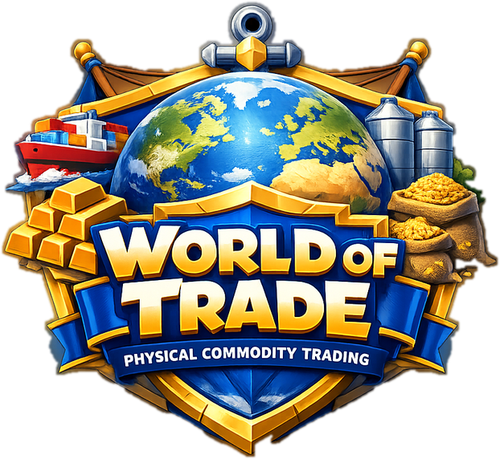

Learn physical commodity trading
one cargo at a time.
Start as an intern, build the core desk skills, specialise in metals, oil, LNG, power and agriculture, then keep training on an endless trading floor. Short decisions, live feedback and no jargon dumped on you — every answer is explained.
Create an account or log in, then start your trading career and keep progress synced across devices
Trading is taught by doing, not by reading.
Most material on this business is either a 400-page textbook or a glossary. Neither makes you able to answer a question under pressure. So this is built the other way round: you answer first, and the explanation lands while you still care about it.
Bite-sized
A lesson is four to six exercises. You can finish one waiting for a coffee, and you keep a streak by doing one a day.
Mistakes come back
Get one wrong and it returns later in the same lesson — and it stays on a list, so Practice keeps handing it back to you until you take it first time.
Always the why
Every exercise carries an explanation written the way a desk would put it. Numbers are worked through, not asserted.
Real mechanics
Incoterms, QP, basis, contango, hedge ratio, variation margin, LC discrepancies. The things that actually decide whether a trade made money.
Checkpoints
Finish a unit and you can sit its checkpoint: eight questions drawn across every lesson, five lives, 75% first time to earn the badge.
A real career path
Intern → Graduate Analyst → Analyst → Junior Trader → Trader → Senior Trader → Desk Head → Head of Trading → Partner. Promotions require both XP and actual Career progress.
Daily dealing room
One Deal of the Day, three Desk Quests and a bonus for a perfect day. The case changes every calendar day and replays cannot farm the first-completion reward.
The floor never ends
Flash Trading, Boss Deals and regenerated 10-question Trading Floor Runs keep producing new decisions after the Career Path is finished.
Compete every week
Climb Bronze through Elite League, contribute XP to a Trading House and collect career achievements. Online standings use a public trader alias — never your email.
Streaks worth showing
Correct answers taken first try build a streak across lessons. Hit a run you are proud of and the app builds a card you can post on LinkedIn.
Yours to keep
You play immediately and the career is saved on the device. Add an account whenever you want it to follow you to another one — the League publishes only your chosen trader alias, house, division and weekly score, never your email.
From intern fundamentals to specialist commodity desks.
111 foundation levels cover the core mechanics of physical commodity trading. Then 108 specialist levels expand into the functions and commodity desks of a trading house.
One exercise, start to finish.
This is a real question from the hedging desk path, with the explanation that follows it.
Your cargo is worth more, your hedge is losing, and you have no cash. What is this?
Hélène Exactly.
This is how well-hedged companies fail. The trade is profitable on paper and dead in cash. Liquidity and price risk are different risks.
Not just multiple choice.
Different mechanics for different kinds of knowledge — recall, sequence, mapping, and arithmetic you would do on a desk.
Hélène Marchand
“A cargo is not a number on a screen. Somebody has to load it, insure it, finance it and be paid for it — and every one of those steps can take your margin.”
What this is, and what it is not.
It is
- A foundation. The vocabulary and mechanics that let you follow a conversation on a physical desk.
- Interview-shaped. The questions people are actually asked about incoterms, QP and hedging.
- Honest about numbers. Every calculation is worked through so you can reproduce it.
- Built to stick. A practice queue weighted on what you got wrong, and a checkpoint per unit.
- Free to play. No paywall and no upsell. A free account keeps your career synced and gives you access to the game.
It is not
- Trading advice. Nothing here is a recommendation to trade anything.
- A qualification. There is no certificate and it does not replace training on a desk.
- Exhaustive. The sixteen foundation units cover the core mechanics, while the eighteen specialist units go deeper across trading-house functions and commodity desks. Each area is designed to build working fluency, not replace years of desk experience.
- A market simulator. This teaches the mechanics, not price prediction.
Answer questions. Climb the desk.
Every XP you earn in a week counts towards a division. Six leagues, six trading houses to fight for, eighteen career achievements — and a public standing that shows a trader alias you choose, never your email.
Until you add an account the board is a local preview, marked exactly like this inside the game. Sign in and the rows become the people actually playing this week.
171 terms, and the reason each one matters.
The glossary is not an appendix. Hélène pulls from it mid-lesson the first time a term appears, and you can read the whole thing without playing a single level.
Each entry says what it is, why a desk cares, and what it costs you to get wrong.
Open the glossaryHelp build the next desk.
World of Trade is free to play. If it has helped you learn, you can support continued development with a one-off contribution. A contribution never unlocks content, XP, levels or account features.
One-off support
Help fund new lessons, trading cases, polish and maintenance while keeping the game open to everyone.
Pure support: no in-game advantage or premium content is attached to the contribution.
Contributors
People helping World of Trade keep growing.
Names are added after the PayPal contribution is checked.
Unit 1, Lesson 1 takes four minutes.
You will know what a physical trader actually gets paid for by the end of it.
Built by Giorgio Bonetta.
World of Trade started from a simple idea: physical commodity trading is learned faster when you have to make decisions, not just read definitions. Giorgio graduated in Economics at Bocconi University and is currently pursuing an MSc in Statistics at the University of Geneva, with experience across commodity research, European power markets and quantitative finance.
The goal is to make desk mechanics — from cargo economics and hedging to logistics, credit and risk — easier to practise, repeat and remember.
Founder on LinkedIn →